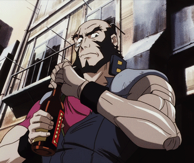

You're gonna carry that weight...
Howdy y'all, I feel that I should warn the reader that there will be MAJOR spoilers from here on out which should be obvious so I implore you to seek out and watch Cowboy Bebop in its entirety to avoid this. This anime means a WHOLE hell of a lot to me and my creative writing as well as my musical interest. It is weird how something so simple as Cowboy Bebop can have this much of an impact of what I believe to be genius story telling and really well thought out character design.
Firstly a brief backstory
I watched Cowboy Bebop for the first time around 2007 when it aired on Toonami a nightly program that was on the ever so popular [adult swim], as a kid what i got out of it was epic space fantasy and action I hadn't seen from anime at the time, not to mention I felt cool at the time staying up late watching shows instead of studying my homework. It would play and replay constantly here in North America along with Naruto and Bleach, which would further my interest into it and anime as a whole. Now in 2022 I realize watching for the 1000th time is that regardless of how old you are every generation could get something from this show, it sets up a plot about bounty hunters trying to find their purpose in the most remote place you can be, space. Space is cold and desolate, being isolated on a ship is the foundation that brings these characters together as tragic as it sounds.
Without further ado, I present the most overdone review of any anime ever! Here is yet another philosophical interpretation, character dive, and musical analysis on the internet from the world of COWBOY BEBOP. 3, 2, 1... Lets jam!
:: ::
"Whatever happens, happens..."
Immediately drawing from his roots author Keiko Nobumoto manages to sink in tragedy and action into Cowboy Bebop and its world right into the first couple of scenes sparing no time for questions or answers. From his first show being about a war drama in 1993 titled 'Hiroshima ni Ichiban Densha ga Hashita' where a Japanese girl, who living a normal life selling food in the streets on the outskirts of Hiroshima, is caught in the blinding light of nuclear bombs dropping in the late 1940's. This as just a fact is not surprising to the whole that is Cowboy Bebop and its motifs and repetitions thereafter. This isn't a story about a sci-fi world but rather its about normal people trying to live normal stable lives amidst of sci-fi elements, which is why I believe it can be so relatable while presenting itself as unique and fresh in terms of world building and storytelling.
The themes of Cowboy Bebop reflect that of Bruce Lee, John Woo, even elements of Dirty Harry from Client Eastwood and in my opinion a Fallout: New Vegas style comedy meets Blade Runner action meets Aliens Sci-fi.
It has been often described as "space opera meets noir, meets comedy, meets cyberpunk".
The plot focuses on a group of bounty hunter in the year 2071, 50 years from when a hyperspace gateway accident cause most of Earth uninhabitable. Since then The Solar System Police force (ISSP) creates contacts for willing bounty hunters to track down for a reward. As is the natural income for our space western duo Jet a former ISSP officer and Spike a former hitman of the criminal Red Dragon Syndicate. These guys find themselves joined by accident with a corgi named Ein, a genetically-engineered Pembroke Welsh Corgi with human-like intelligence. Faye Valentine, an amnesiac con artist as well as an eccentric child Edward who's hobbies include hacking and eating large amounts of food before taking a twelve hour nap.
Between the crazy adventures of Faye, Ed, Jet and Ein, most of the story is focused on Spike and his rivalry with Vicious a criminal of the current Red Dragon Syndicate and a friend to Spike. Julia, Vicious' then girlfriend has an affair with Spike and to protect herself she fleas, enraged Vicious sends hitmen to kill the pair of them and Spike manages to survive, with his past haunting him at every step of the way.
:: ::
"They say hunger is the best spice."
Jet Black - The Leader

Jet comes off as a stable guy with the knowledge to keep others protected and secured. He isn't as witty and quick as Spike or Faye but he can turn a ship on a dime when he needs to and has the endurance of a horse.
Jet brings together the group with a good meal taking his character into the caretaker role often times. Even so he is not without his flaws as his past is filled with anguish and heartache all the same. Scars and cybernetics cover Jets body, this shows that he has had a rough time being a bounty hunter and through his jokes and smiles somehow manages to get back into the swing of things without being pushed around too much. Back before the events of the Bebop Jets old job was on a police force back in the day with a partner he once looked up to. Jet was the king of running down crime where ever it reared its ugly head, nicknamed "black dog" once he bites down on something, he never lets go. One day, after what would seem like an easy job he was surrounded and betrayed by his partner and his wife, losing an arm in the process, the big dog was outnumbered and outsmarted. Shortly after parting ways with Spike as a partner Jet cut ties with his past in a healthier way than Spike managed to. Because of that, throughout his character there isn't a great deal of burden that Jet doesn't eventually come to understand, in contrast with being set in his old ways he is levelheaded and is usually the one to break up fights among the group, even if he and Spike get into an argument over food or a job.
Even to the bitter end Jet managed to keep his sanity and his duty in line with whatever came his way. Jet makes for certain that whomever crosses his path that he only gets involved if it can pay for his next meal. He is a family man and he is the glue to the Bebop as a whole, without Jet no one would have gotten along so well with each other, he is the backbone to the crew and Spike as a partner in bounty hunting, his skills unmatched and only rarely tested.
Knowing how much the Bebop would have changed his life for the better I'm sure he would have tried to convince Spike to reconsider or at least help him resolve in a better way, But where one story ends, another begins.
:: ::
Faye Valentine - The Seducer
Faye Valentine, her character is everything you would want in a sexy bad-ass balls to the wall female protagonist in an anime like this, she is comparable to Trinity in the popular series The Matrix quadrilogy.
Much like with all the characters in Cowboy Bebop Faye is hiding her bombastic shell of a personality with something heartfelt and tragic that almost anyone can relate to, as her story continues we get to see it unravel in to this beautiful tale of returning to your roots and seeing how time makes you feel small in the grand scheme of things. Her distrust of others, scheming and irresponsible personality was born of betrayal as is most of the Bebop crew. She had amnesia and was taken advantage of eventually leading to her acquiring clinical debt and eventually a bounty on her head. The now on the run Faye has to come to grips with her past she cannot remember and find a path that is truly her own with people she can trust. We find out later that Faye woke up from cryogenic sleep after a space shuttle accident, meaning she is a lot older than she looks. But don't let her looks fool you after crossing paths with Spike and Jet she makes herself feel at home and doesn't let the guys push her around.
Not as lazy as Spike she does indulge herself with gambling and does allow herself to take advantage of men with her seducing and flirtatious nature, hardly will she take the desires of men seriously however. Much to the surprise to the Bebop crew Faye learns where her place is in the crew and learns to accept and trust people in her life again, this leads her down a path to truly accept how not in control she is with her life and other people around her. She begins to not have to prove to others how strong she actually is. Faye knows how much Spike needed her when times were rough but that didn't mean she was against it all the time. While trying to find herself she recognized Spike wasn't fully there either, even though she would eventually realize how much she could have loved Spike, it was time in the end that caught up with the two of them.
Out of the blue, a package was delivered on the Bebop, Faye fearing it was a debt collector fled without anyone's notice. Jet reluctantly payed the fee and opened it to find a Betamax tape. Eventually they receive another package of a cassette player. Faye upon returning to the ship ignored the commotion about the tape but still curious and peaked a look at what was playing. The tape was hers, she recorded herself, she was younger and happier, they were familiar to her and she obsessed over the tape night after night. Ed in her half sleep trance tells Faye where she could find the place where the tape was recorded. Faye returns to her ship and takes Ed with her leaving the Bebop.
Upon arriving Faye encounters an elder women, an old classmate of hers named Sally. Sally talks about the life Faye missed out on and what could have been. Reluctant to want to understand Faye runs from her emotions and heads back to the Bebop. Once she undresses for a shower Faye's memory comes back to her and she decides to leave to where she belongs and that she doesn't plan on coming back. Unfortunately, Faye finds the spot of her home, crumbled to ruin and rubble, Faye walks around aimless and lies in the light of a sunset. Faye was in awe of her younger self, inspired by this she took that opportunity to encourage Ed to find a place where she belonged.
:: ::
Edward & Ein - The Orphan(s)
Ed's character arc is spent mostly on the last couple episodes of this anime, there is a point where she gets her resolution with Faye and the rest of the Bebop crew and together with Ein, she really is a loose cannon.
Some how or another Ein always seems to agree with Ed as if Ein can understand her to some degree. Ed is the wild card when it comes to the whole crew, she sometimes is in a trance talking to herself trying to unravel the mysteries of whatever is going on in a unique way that only she seems to understand, she sleeps constantly and is mostly goes barefoot as she eventually shows she cannot walk while wearing shoes. She has odd skills that fit in nicely to the rest of whatever is going on, and as such was something to be missed by both Spike and Jet as the Bebop's days came to an end. In that light Ed is the comedic relief character, however she doesn't get annoying, she knows when she isn't need and she knows when she is. Her personality is troublesome at first but she warms up to you on how talented and helped she begins to be to the Bebop. Ed in her past was abandoned by her father a cartographer on Earth, one day he was so obsessed with his work he just up and forgot her at day care. One of Ed's closest friends was into computers at a young age, he was named Tomato and is what gave Ed's interest in to hacking. One day she escaped the day care in some effort to make resolve with her father or something else entirely.
The audience and even Faye in the English dub sometimes mistaken ed for a boy due to her unusual affinity to things like computers and tinkering with ships at her age. Eventually I believe Ed found her calling, she knew that finding her father wasn't going to help her. Ed made her own family along the way and loved every second of it, she knew it wouldn't last forever and became an adult in some ways when departing, together with Ein they set out on new adventures, who knows what trouble they might find or friends they'll make along the way.
:: ::
Spike Spiegel - The Rebel
When we first encounter Spike it is when he is calm and almost in a trance, alone he is in focus. His demeanor and outer shell shuts everyone out that he doesn't let in, and when it means enough for him to let you in he'll only do so to let you know why he can beat you at your game.
Spike is adaptable to any situation and is the number one suicidal badass any good team needs to get shit done. Often times jet my not like his attitude but they work well together when the situation calls for it. The fact that spike was once a part of a crime syndicate gives you relief that he'll dodge anything that comes his way. Behind that mask is a cold hard killer no matter how you look at it. Even to the bitter end Spike recognizes it, he knows his purpose was not his past but it was his present and with that blindness (literally) it gave him a reason to keep going when the times got tough for the crew. It was the crew that kept him going and he ignored that for the sake of proving that he could be happy leaving his past behind. Jet and Faye saw through his tough guy routine shortly after he revealed his past he was an injured wild dog just waiting to be put down with dignity. Jet and Spike really had a perfect team and Faye in Spikes eyes kinda got in the way of that as he and Jet agreed on the "no girls allowed" policy. As of course it would distract them and as Spike knows all too well, a distraction can cost you your life, or even your eye. Sometimes I wish spike threw away his indifferent nature and stood up to see what was blooming, maybe even take some actual advice from Jet every now and then, but Spike was poised and there was no cure for it, it was an infection of the mind.
In the end Spikes real enemy was himself, his shadow of torment leading to a path he did not have to take, but it was a lesson he had to learn for the friend he made, for the friends he loved. Julia was everything for Spike it was his reason for living and since then he was living undead. A zombie of his former potential self, Julia dies in his arms and she speaks her last words to him, we cannot hear them only see her lips move. After confronting Faye on his leaving of the Bebop leaving her stranded, confused and desperate he comes back only to say that he is leaving for good this time. Jet prepares a last meal for him and they joke about him being fantastical and Immortal.
Spike turns to finish what he started and attempts to fight Vicious the man who stole his future and his love for life. In the struggle he uses his mouth to get to Vicious and eventually the two end up killing each other in a standoff, neither win the fight. And as fate would have it he sees Julia in his present, in his real eye. He lets go of his past and this time follows up his death with certainty and a smile. As Spikes story ends in tragedy we encounter him at his last moments with a motif he endures in the beginning of the show, his cycle of death was living a lie everyday, that to him: "Whatever happens, happens." is better than facing your struggles head on like the person you were trying to tell everyone you were about. Thankfully he didn't die in vain.
:: ::
:: ::
"I'm watching a dream I'll never wake up from."
Now onto the compositional work of Cowboy Bebop and its famous artist Yoko Kannos' work is nothing short of brilliant and captivating. She can pull on your heart strings and drop you into action as if you are fighting along side your favorite characters, her compositional decisions create the world of Cowboy Bebop from the ground up, setting the tone and the somber tales within it. Yoko Kannos' various work like with Ghost In The Shell: Stand Alone Complex tells you how much focus and love she has as an artist and I am with her all the way, I listen to the Cowboy Bebop soundtrack at least once a couple months for the mental boost to get me through projects like this. Her score in Cowboy Bebop in my opinion sets the standard for anime as a whole, the angle at which she approaches Jazz is fresh in the context of the anime. Bringing together ideas of old blues and Jazz is juxtaposed with the future of deceit, crime and relationships in space and on planets like mars.
Yoko Kanno's work on Stand Alone Complex will definitely be in depth in its own review. For now I want to focus on the choices made across the OST. Tracks like Piano Black, Cat Blues, The Egg and I and Cosmos that give you this other worldly feel as if Humanity past through the great filter unscathed while also still having to survive its own poisonous treachery as it struggles to cope with every day life in space and throughout the society it has built. The use of vocals for 'Space Lion' draws you into a world filled with life without telling you its alive, a history filled with passions and love and war all the same to the real world at the time of the 90's Japan. Where a world reflected in military and duty was almost a part of the city itself and fell into the backdrop that was the culture everyone just accepted. A lot of Ghost In The Shell's sound and DNA is woven into this without subtlety and it gives it its own charm that you can still distinguish as solely 'Bebop.'
Then we have the Waltz for Zizi and others like Spokey Dokey and Felt Tip Pen that take a more personal melody and digs right into the lives of the bystanders just trying to keep out of the action going on. Behind every corner is a man, women, child, grandparent watching as the actions of the Bebop tell their tale and sew the fabric of time into their favor drawing out a sweet bluesy melody that manages to tie in that family feeling right out of the four of our protagonists.
Finally we have a couple tracks that spill out everything it has to offer in terms of the struggles and emotions our characters are going though tracks like Rain and subsequently Memory which takes on the motif from the beginning and wraps up our feelings and tears for the journey Spike and crew took us on and the love and life that was given in each and every one of the artists and directors of this Animated work. Throughout the show we were in for action and resolve, we were given revenge and atonement, and Memory provides those notes for when we need their warm embrace right up until the end, right when we were begging for more. As life would have it, all good things must come to an end.
:: ::
"Bang..."
Thank you for baring with me for the end! I know this has been overdone but I cannot extend any more thanks for keeping up with me and my feelings toward this anime, this will probably be the longest one of all of them that I will do as life is catching up with me and if I blink I'll miss it! There is a lot of things I'm learning as I write this and a lot I am discovering about where I want to be and what skills I want to continue embracing and tuning as the months pass by. I hope you have enjoyed thus far, expect more reviews when I have the time for them, I love you all, and as all ways 'See you space cowboy...'
[Top]